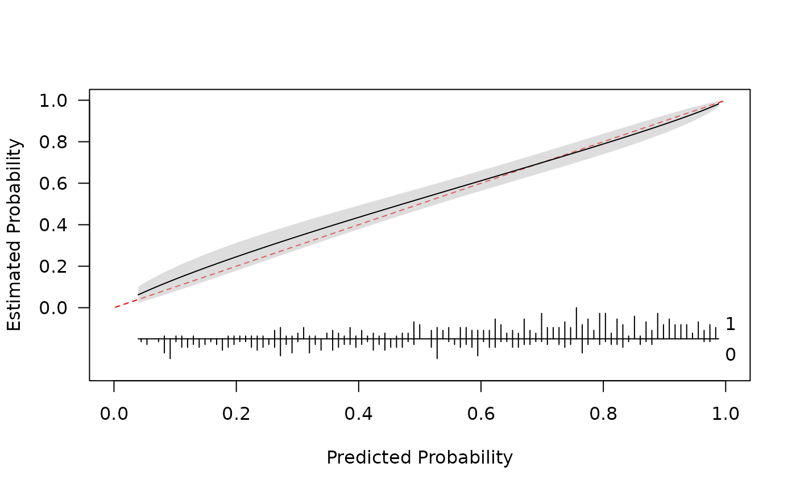
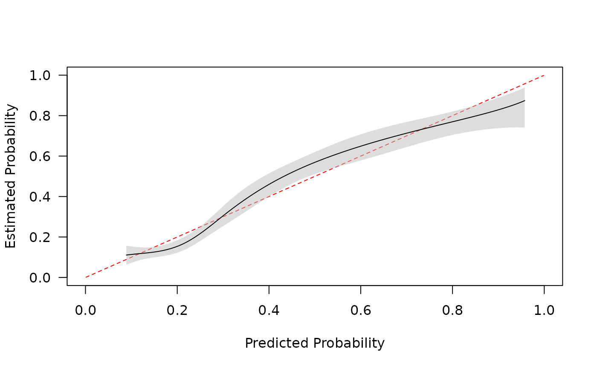

Assess calibration of clinical prediction models (agreement between predicted and observed probabilities) via different smooths. Binary and time-to-event outcomes are supported.
Arguments
- y
a binary or a right-censored time-to-event outcome. Latter must be an object created via
survival::Surv.- p
predicted probabilities from a clinical prediction model. For a time-to-event object
timemust be specified andpare predicted probabilities of the outcome happening bytimeunits of time follow-up.- smooth
what smooth to use. Available options:
'gam' (default) = generalized additive model via
mgcv::gamandmgcv::s. Optional arguments arebs,k,fx,method(see?mgcv::gamand?mgcv::s)'rcs' = restricted cubic spline using
rms::rcs. Optional arguments for this smooth arenk(number of knots; defaults to 5) andknots(knot positions; set byHmisc::rcs.evalif not specified)'ns' = natural spline using
splines::ns. Optional arguments aredf(default = 6),knots,Boundary.knots(see?splines::ns)'bs' = B-spline using
splines::bs. Optional arguments aredf(default = 6),knots,Boundary.knots(see?splines::bs)'lowess' = uses
lowess(x, y, iter = 0)based onrms::calibrate. Only for binary outcomes.'loess' = uses
loesswith all defaults. Only for binary outcomes.'none' = logistic or Cox regression with single predictor variable (for binary outcome performs logistic calibration when
transf = "logit"). Seelogistic_cal
'rcs', 'ns', 'bs', and 'none' are fit via
glmorsurvival::coxphand 'gam' is fit viamgcv::gamwithfamily = Binomial(link="logit")for a binary outcome ormgcv::cox.phwhenyis time-to-event.- time
what follow up time do the predicted probabilities correspond to? Only used if
yis aSurvobject- ci
what kind of confidence intervals to compute?
'sim' = simulation based inference. Note this is currently only available for binary outcomes.
nsamples are taken from a multivariate normal distribution with mean vector = coef(mod) and variance covariance = vcov(model).'boot' = bootstrap resampling with
nreplicates.yandpare sampled with replacement and the calibration curve is reestimated. Ifknotsare specified the same knots are used for each resample (otherwise they are calculated using resampledpor transformation thereof)'pw' = pointwise confidence intervals calculated via the standard errors produced by relevant
predictmethods. Only for plotting curves; if selected, CIs are not produced for metrics (not available for smooth = 'lowess')
Calibration metrics are calculated using each simulation or boot sample. For both options percentile confidence intervals are returned.
- n
number of simulations or bootstrap resamples
- transf
transformation to be applied to
pprior to fitting calibration curve. Valid options are 'logit', 'cloglog', 'none', or a function (must retain order ofp). If unspecified defaults to 'logit' for binary outcomes and 'cloglog' (complementary log-log) for time-to-event outcomes.- eval
number of points (equally spaced between
min(p)andmax(p)) to evaluate for plotting (0 or NULL = no plotting). Can be a vector of probabilities.- plot
should a plot be produced? Default = TRUE. Plot is created with default settings. See
plot.pmcalibration.- ...
additional arguments for particular smooths. For ci = 'boot' the user is able to run samples in parallel (using the
parallelpackage) by specifying acoresargument
References
Austin P. C., Steyerberg E. W. (2019) The Integrated Calibration Index (ICI) and related metrics for quantifying the calibration of logistic regression models. Statistics in Medicine. 38, pp. 1–15. https://doi.org/10.1002/sim.8281
Van Calster, B., Nieboer, D., Vergouwe, Y., De Cock, B., Pencina M., Steyerberg E.W. (2016). A calibration hierarchy for risk models was defined: from utopia to empirical data. Journal of Clinical Epidemiology, 74, pp. 167-176. https://doi.org/10.1016/j.jclinepi.2015.12.005
Austin, P. C., Harrell Jr, F. E., & van Klaveren, D. (2020). Graphical calibration curves and the integrated calibration index (ICI) for survival models. Statistics in Medicine, 39(21), 2714-2742. https://doi.org/10.1002/sim.8570
Examples
# binary outcome -------------------------------------
library(pmcalibration)
# simulate some data
n <- 500
dat <- sim_dat(N = n, a1 = .5, a3 = .2)
head(dat)
#> x1 x2 y LP
#> 1 -0.79656573 0.78782032 1 0.36574445
#> 2 0.99246366 2.17238436 1 4.09605053
#> 3 -0.32348141 2.49976601 1 2.51455903
#> 4 0.04091126 -0.43830184 1 0.09902312
#> 5 -0.08776347 0.49726921 1 0.90077732
#> 6 -0.21569343 0.09228747 0 0.37261288
# predictions
p <- with(dat, invlogit(.5 + x1 + x2 + x1*x2*.1))
# fit calibration curve
cal <- pmcalibration(y = dat$y, p = p, smooth = "gam", k = 20, ci = "pw")

summary(cal)
#> Calibration metrics based on a calibration curve estimated for a binary outcome via a generalized additive model (see ?mgcv::s) using logit transformed predicted probabilities.
#>
#> Estimate
#> Eavg 0.021
#> E50 0.015
#> E90 0.044
#> Emax 0.046
#> ECI 0.065
plot(cal)
# time to event outcome -------------------------------------
library(pmcalibration)
if (requireNamespace("survival", quietly = TRUE)){
library(survival)
data('transplant', package="survival")
transplant <- na.omit(transplant)
transplant = subset(transplant, futime > 0)
transplant$ltx <- as.numeric(transplant$event == "ltx")
# get predictions from coxph model at time = 100
# note that as we are fitting and evaluating the model on the same data
cph <- coxph(Surv(futime, ltx) ~ age + sex + abo + year, data = transplant)
time <- 100
newd <- transplant; newd$futime <- time; newd$ltx <- 1
p <- 1 - exp(-predict(cph, type = "expected", newdata=newd))
y <- with(transplant, Surv(futime, ltx))
cal <- pmcalibration(y = y, p = p, smooth = "rcs", nk=5, ci = "pw", time = time)
summary(cal)
plot(cal)
}
